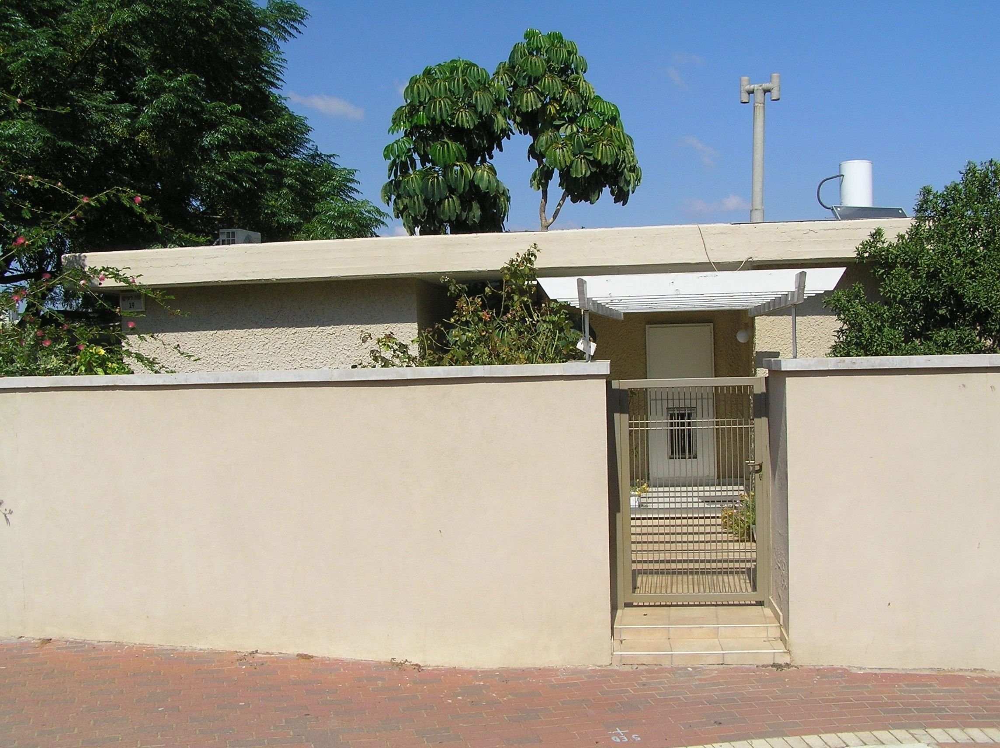
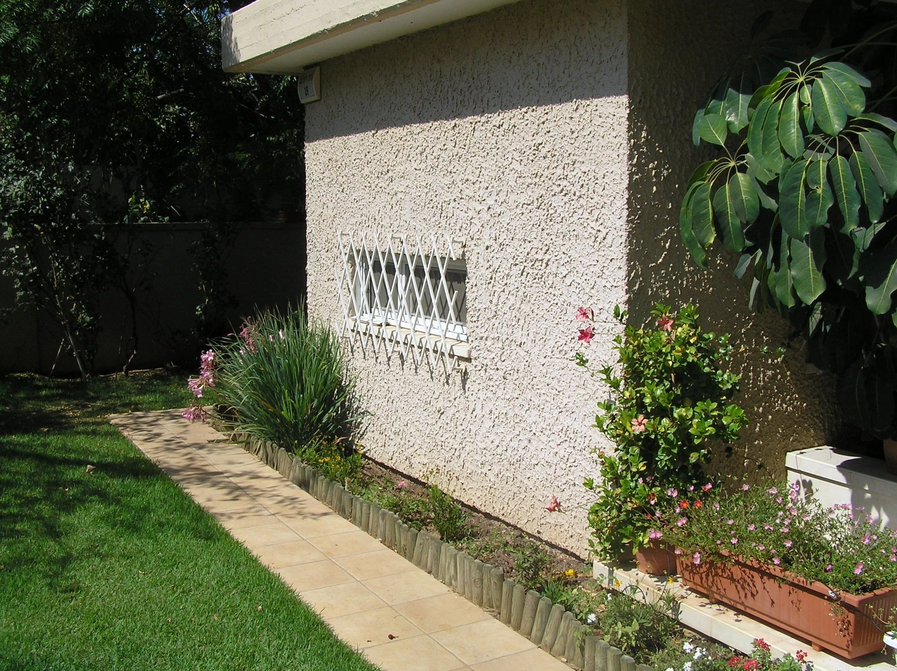
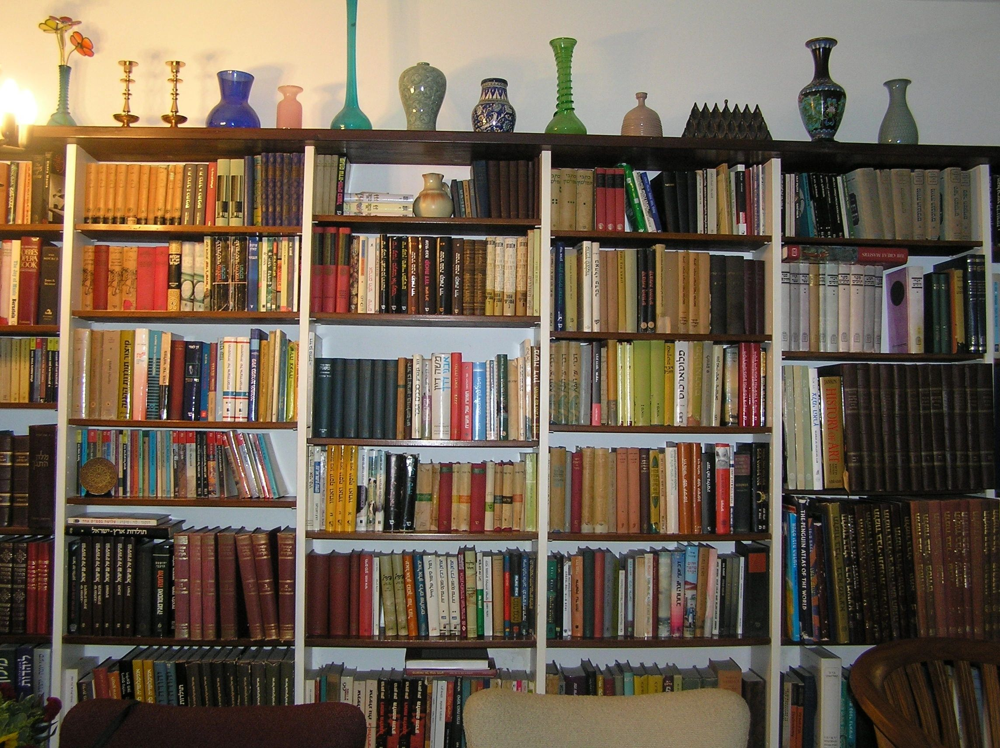
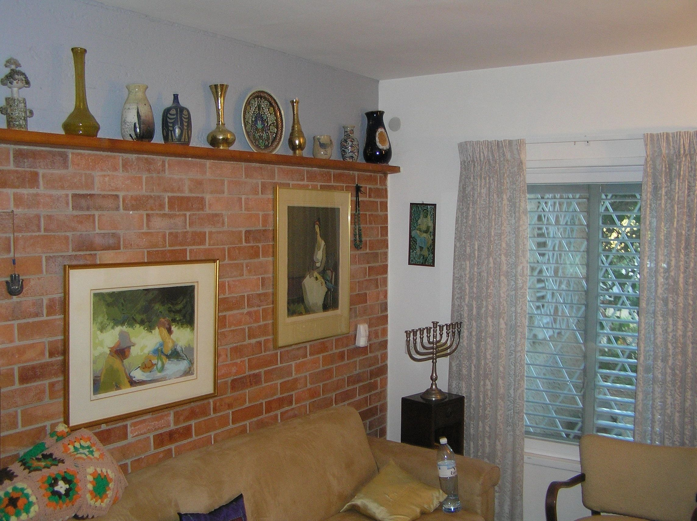
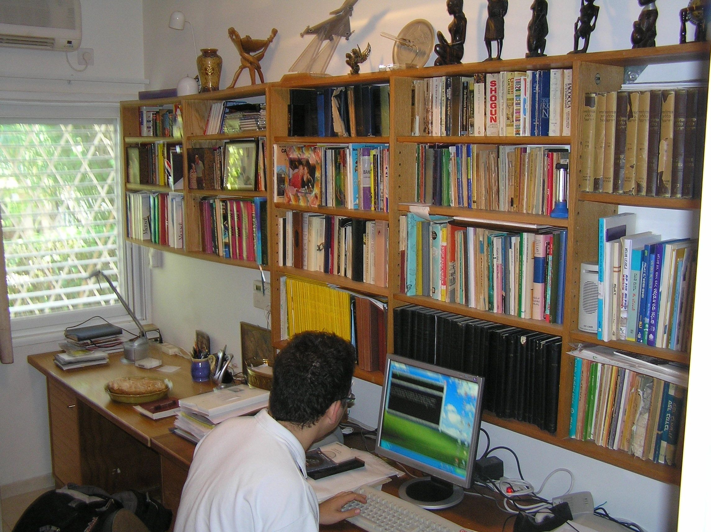

Home and Hobbies
Home
For the last forty years, Efraim and Bat-El lived in 19 Neve Re'im street in Ramat Hasharon, Israel. They married their son, Avner (who, by the way, is the owner of a Golan olive farm), and grandson, Avital, there. Here are some pictures of the home in question.
Outside


Inside
As you can see, Efraim and Bat-El loved books... and vases:


Hobbies
Efraim was a scholar of history and languages.
He spoke fluently six or seven languages (Hebrew, Yiddish, Russian, English, French, German, and a few more) and was competent in at least six or seven more (Spanish, Arabic, Italian and some others). I once caught him reading Swahili for Beginners, although I doubt he became too fluent in that language.
Here is as view of his working room in Neve Re'im street. Most of the books here are either technical engineering books or language books, dictionaries, etc.

More pictures of Efraim and his family can be found here.